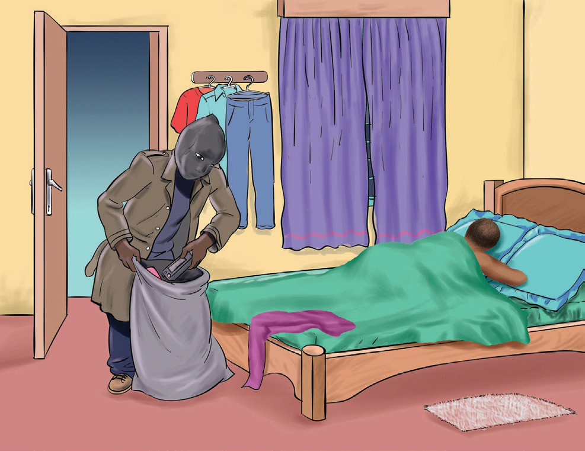

On the table was a shelf with a metal box in it. There was probably money in that.
It, too, went into the bag. The thief tiptoed around the room. He took a shirt from a
low stool and a pair of socks from the fl oor beside the stool. Under the window was another table with only a piece of paper on it. The bag with the stolen goods was now full. He heard the sound of a person turning over in bed from the next room, so he picked up his bag and left as stealthily as he entered. Once more, he went through the quiet streets stealthily.
Later, he reached home, put the radio and the metal box under his bed, and hid the sack in a big box where he kept stolen clothes. He padlocked the box and put the key under his pillow. Then, he fell asleep.
Three days later, it was announced that the police had apprehended him at his
house with stolen items. He was taken to court and, upon being found guilty, was sentenced to jail. His actions left his loved ones in agony and shame.
Adapted from Ministry of Education (1977, p. 62)
Questions
1. What is the story about?
2. What is interesting about the story?
3. Who is the masked man?
4. What is he doing?
5. What societal or psychological factors could have infl uenced his behaviour and subsequent arrest?
6. How might the legal system’s response refl ect broader societal attitudes toward crime and punishment?